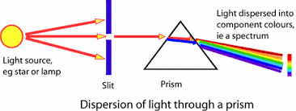

The breakthrough moment of Raman's scientific career came in 1928 while he was conducting research at the Indian Association for the Cultivation of Science (IACS) in Calcutta.
When light passes through an object, like a liquid, a crystal, or even the air around us, some of the light particles, called photons, interact with the atoms and molecules in that object. Most of the photons pass through unchanged, but a small fraction of them undergo a change in their energy, which results in a slight shift in their color.
Imagine you're looking at a beam of sunlight passing through a glass of water. The majority of the sunlight goes straight through the water, but a tiny portion of it changes its color. You might not notice this change with your naked eye, but if you use a special device to analyze the light more closely, you'll see that the light contains additional colors or wavelengths that were not present in the original sunlight.
The Raman Effect is essential because it provides scientists with a powerful tool to study the atomic and molecular structure of various materials. By analyzing the color shift or "Raman scattering" of light, scientists can learn a lot about the substances they are studying. It allows us to identify and understand the types of molecules present in a sample, even if they are in very small amounts.

the Raman Effect has several practical uses that affect our everyday lives